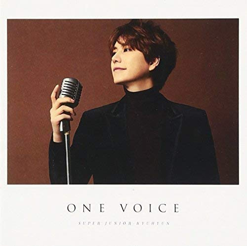
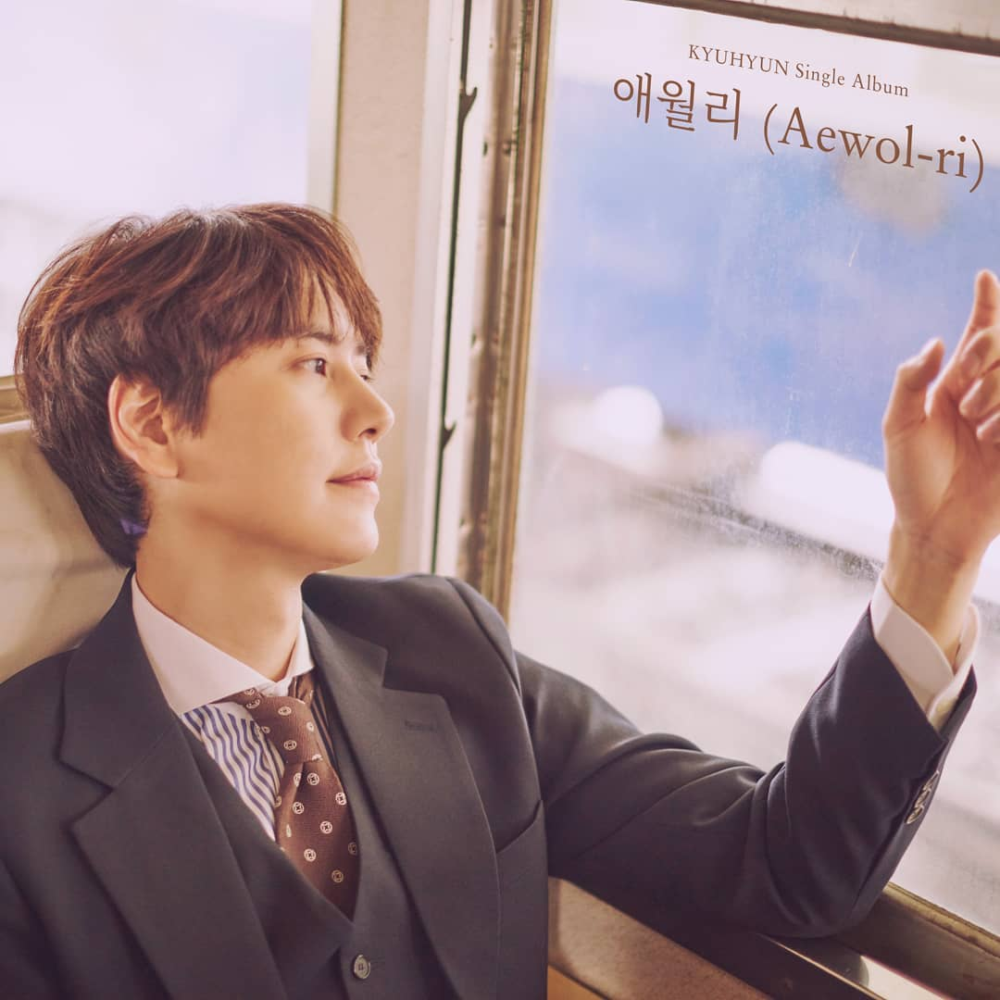
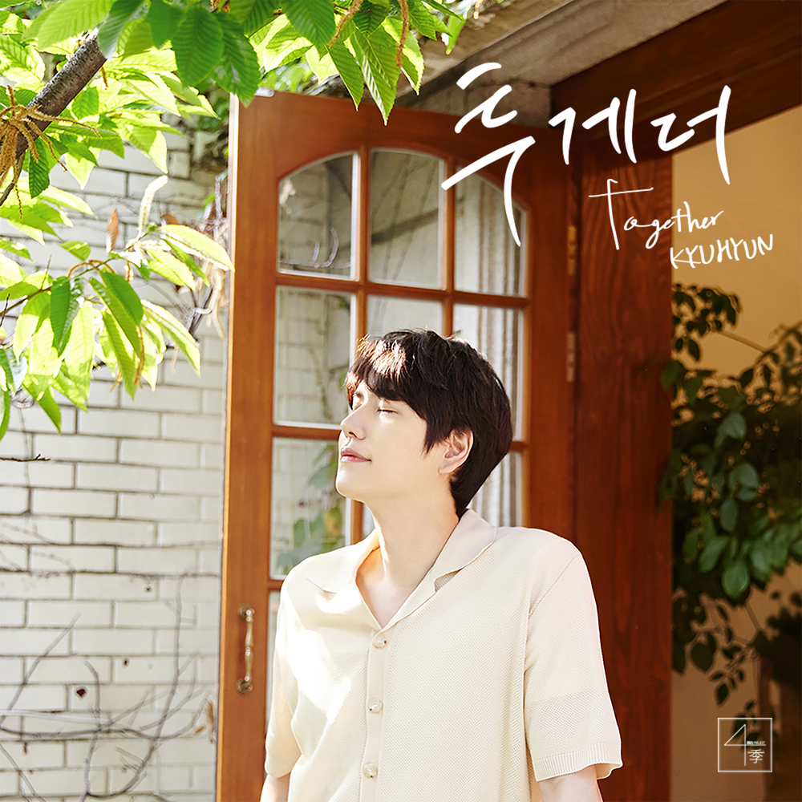
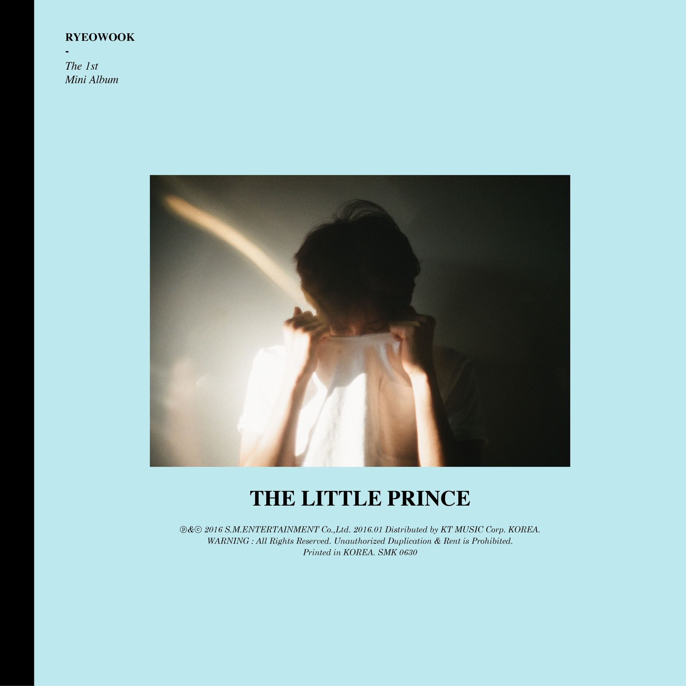
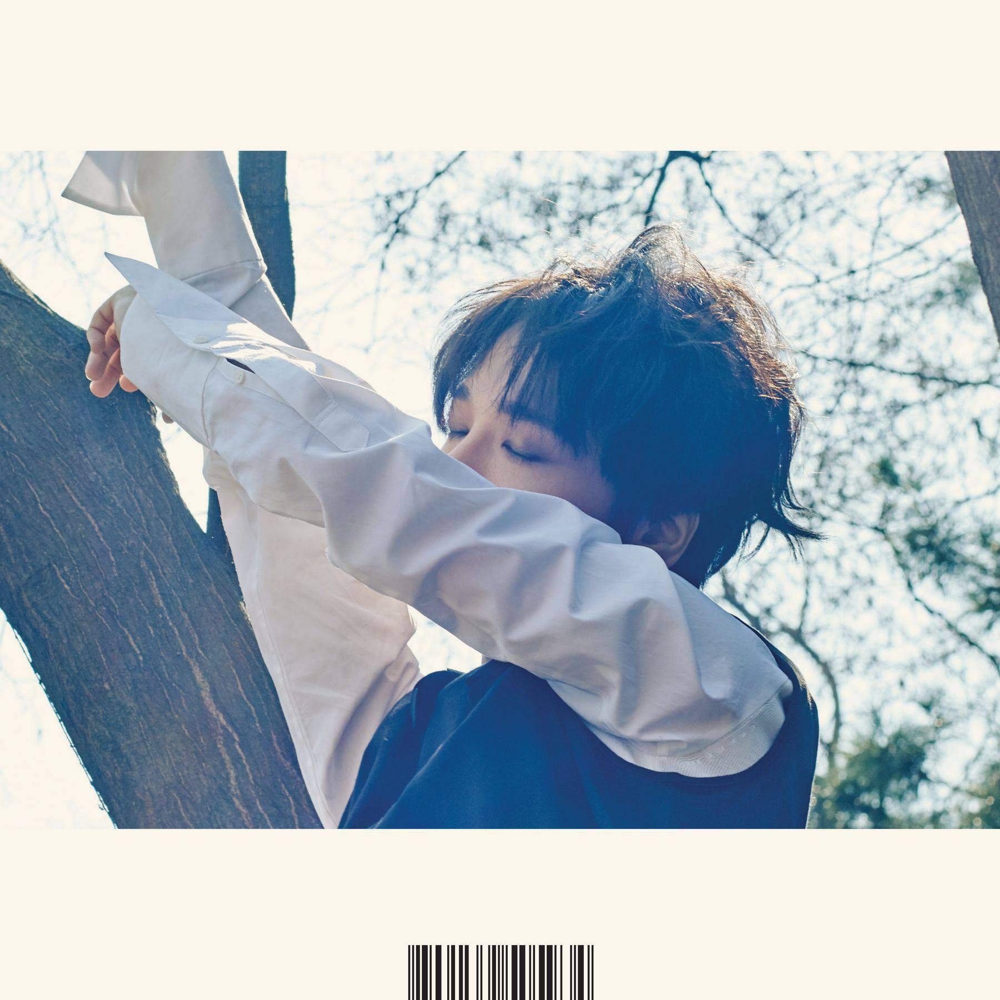
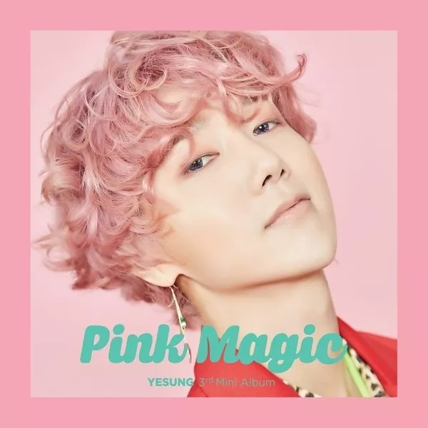

Discografía
SUPER JUNIOR-K.R.Y.

When We Were Us
(푸르게 빛나던 우리의 계절)
Fecha: 8 de agosto de 2020
Tipo: Mini album
Idioma: Coreano
Lista de canciones:
- When We Were Us (푸르게 빛나던 우리의 계절)
- Way to Busan (부산에 가면)
- The Way Back to You (너에게로)
- I Can’t (할 수 없는 일)
- Home (기대)
- Midnight Story (별의 동화)
Fly
Fecha: 15 de abril de 2011
Tipo: Single album
Idioma: Coreano
Lista de canciones:
- Fly
- Fly (instrumental)

Promise You
Fecha: 23 de enero de 2013
Tipo: Single album
Idioma: Japonés
Lista de canciones:
- Promise You
- ハナミズキ (Hanamizuki)
- Promise You (Instrumental)

Join Hands
Fecha: 5 de agosto de 2015
Tipo: Single album
Idioma: Japonés
Lista de canciones:
- JOIN HANDS
- Point Of No Return
- JOIN HANDS (Instrumental)
- Point Of No Return (Instrumental)

Traveler
Fecha: 28 de septiembre de 2020
Tipo: Single album
Idioma: Japonés
Lista de canciones:
- Traveler
- When We Were Us (青く光る季節)
KYUHYUN

At Gwanghwamun (광화문에서)
Fecha: 13 de noviembre de 2014
Tipo: Mini album
Idioma: Coreano
Lista de canciones:
- 광화문에서 (At Gwanghwamun)
- Eternal Sunshine
- 뒷모습이 참 예뻤구나 (At Close)
- 이별을 말할 때 (Moment of Farewell)
- 사랑이 숨긴 말들 (One Confession)
- 깊은 밤을 날아서 (Flying, Deep in the Night)
- 나의 생각, 너의 기억 (My Thoughts, Your Memories)
- 在光化门 (At Gwanghwamun) (Chinese Ver.)

다시, 가을이 오면 (Fall, Once Again)
Fecha: 15 de septiembre de 2015
Tipo: Mini album
Idioma: Coreano
Lista de canciones:
- 밀리언조각 (A Million Pieces)
- 좋은사람 (Remember Me)
- 긴 팔 (Autumn Sleeves)
- 피아노 숲 (Piano Forest)
- 그냥 보고 싶어 그래 (Because I Miss You)
- 바람 (Wind)
- 안녕의 방식 (Ways to Say Goodbye)

너를 기다린다 (Waiting, Still)
Fecha: 24 de febrero de 2017
Tipo: Mini album
Idioma: Coreano
Lista de canciones:
- 블라블라 (Blah Blah)
- 조용히 안녕 (Last Good-bye)
- 여전히 아늑해 (Still)
- Fall in you (네 안의 가을)
- 시절인연 (Love in Time)
- 마음세탁소 (When with me)
- 그리고 우리 (And We)
- Blah Blah (Thai Ver.)

One Voice
Fecha: 8 de febrero de 2017
Tipo: Mini album
Idioma: Japonés
Lista de canciones:
- 僕のまじめなラブコメディー (My Serious Love Comedy)
- Celebration ～君に架ける橋～
- 箒星 (Comet)
- Terminal
- Lost My Way
- Love to Love
- ブラブラ (Blah Blah)
- Beautiful
- 光化門で (At Gwanghwamun)
- めぐり逢う未来で (In the Future We Meet Again by Chance)

다시 만나는 날 (Goodbye for now)
Fecha: 24 de mayo de 2017
Tipo: Single album
Idioma: Coreano
Lista de canciones:
- 블라블라 (Blah Blah)
- 조용히 안녕 (Last Good-bye)

그게 좋은거야 (Time with you)
Fecha: 14 de mayo de 2019
Tipo: Digital single
Idioma: Coreano
Lista de canciones:
- 그게 좋은거야 (Time with you)

너를 만나러 간다 (The day we meet again)
Fecha: 20 de mayo de 2019
Tipo: Single album
Idioma: Coreano
Lista de canciones:
- 애월리 (Aewol-ri)
- 너를 만나러 간다 (The day we meet again)

Dreaming
Fecha: 23 de julio de 2020
Tipo: Digital single
Idioma: Coreano
Lista de canciones:
- Dreaming

내 마음을 누르는 일 (Daystar)
Fecha: 08 de octubre de 2020
Tipo: Digital single
Idioma: Coreano
Lista de canciones:
- 내 마음을 누르는 일 (Daystar)

마지막 날에 (Moving On)
Fecha: 26 de enero de 2021
Tipo: Digital single
Idioma: Coreano
Lista de canciones:
- 마지막 날에 (Moving On)

커피 (Coffee)
Fecha: 13 de abril de 2021
Tipo: Digital single
Idioma: Coreano
Lista de canciones:
- 커피 (Coffee)

투게더 (Together)
Fecha: 5 de julio de 2021
Tipo: Digital single
Idioma: Coreano
Lista de canciones:
- 투게더 (Together)
RYEOWOOK

어린왕자 (The Little Prince)
Fecha: 28 de enero de 2016
Tipo: Mini album
Idioma: Coreano
Lista de canciones:
- Like a Star
- 어린왕자 (The Little Prince)
- 그대 (Hello)
- 알 수도 있는 사람 (People you may know)
- Foxy Girl (feat. DinDin)
- 품 (POOM)

너에게 취해 (Drunk on love)
Fecha: 2 de enero de 2019
Tipo: Mini album
Idioma: Coreano
Lista de canciones:
- 너에게 (I’m not over you)
- 우리의 거리 (One and Only)
- 취해 (Drunk in the morning)
- Without You
- Something Good
- Sugar
- 파란 별 (The 2nd Story) Special Track

우리의 거리 (One and Only)
Fecha:28 de noviembre de 2018
Tipo: Single
Idioma: Coreano
Lista de canciones:
- 우리의 거리 (One and Only)
YESUNG

Here I am
Fecha: 19 de abril de 2016
Tipo: Mini album
Idioma: Coreano
Lista de canciones:
- 문 열어봐 (Here I am)
- 벚꽃잎 (Spring in me) (Duet. 달총 of
CHEEZE)
- Between
- 우리 (We)
- 메아리 (Your echo)
- 어떤 말로도 (Confession) (Feat. Chanyeol of EXO)
- 달의 노래 (My Dear)

Spring Falling
Fecha: 18 de abril de 2017
Tipo: Mini album
Idioma: Coreano
Lista de canciones:
- 봄날의 소나기 (Paper Umbrella)
- 겨울잠 (Hibernation)
- 그대뿐인지 (All But You)
- Fly (번지점프)
- 그때로 (At the Time) (Feat. Kyuhyun)
- Sugar
- 비눗방울 (So Close Yet So Far)

Pink Magic
Fecha:18 de junio de 2019
Tipo: Mini album
Idioma: Coreano
Lista de canciones:
- Pink Magic
- 굶지 말기 (Eat’s OK)
- 그냥 오면 돼 (Every day, Wait for us)
- 평행선 (Parallel Lines)
- 외워둘게 (I’ll remember)
- 우연을 모아 (Wish)

Beautiful Night
Fecha:3 de mayo de 2021
Tipo:Mini album
Idioma: Coreano
Lista de canciones:
- Beautiful Night
- Phantom Pain
- Corazón Perdido (Lost Heart)
- Fireworks
- No More Love
- 이렇게 우리는 (Like Us)
- 바람결에 날려 보아요 (A Letter in The Wind)